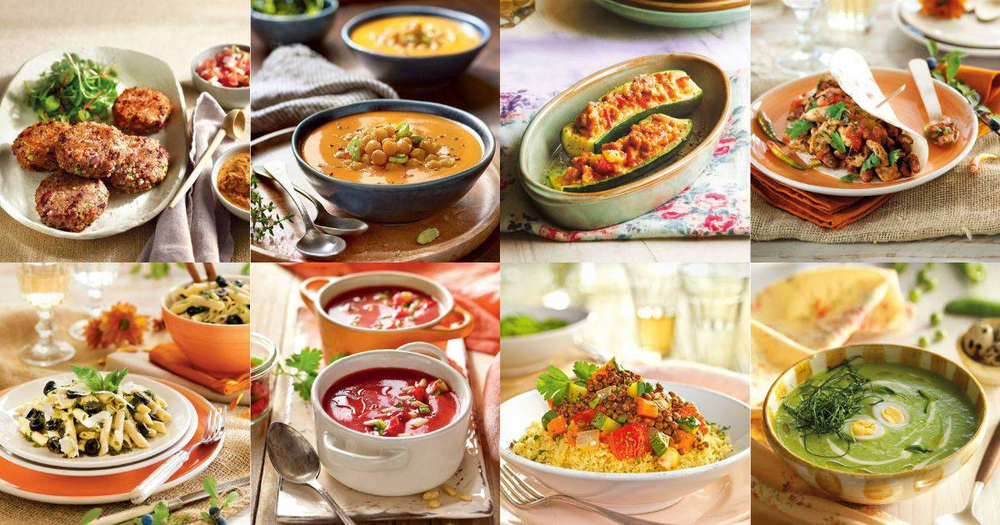

Mis recetas y acerca de mi
En esta seccion voy a presentar un listado de mis recetas
Tengo una amplia variedad de recetas para compartir con ustedes es por ello, que aca les cuento como a lo largo de estos anios puede ir adquiriendo experiencia y acresentando y mejorando mis recetas. Todas bajo un control estricto para poder darles el mejor sabor y tambien lo mejor en salud. Disfruten de cada una de ellas.
Estas son imagenes de algunos de mis platos preferidos
Mis Recetas
- Sopa de calabaza
- Sopa de mani
- Sopa de fideos
- Sopa de Arroz
- Sopa de remolacha
- Puchero
- Milanesas napolitana
- Bifes al caballo
- Lomitos
- Papas fritas